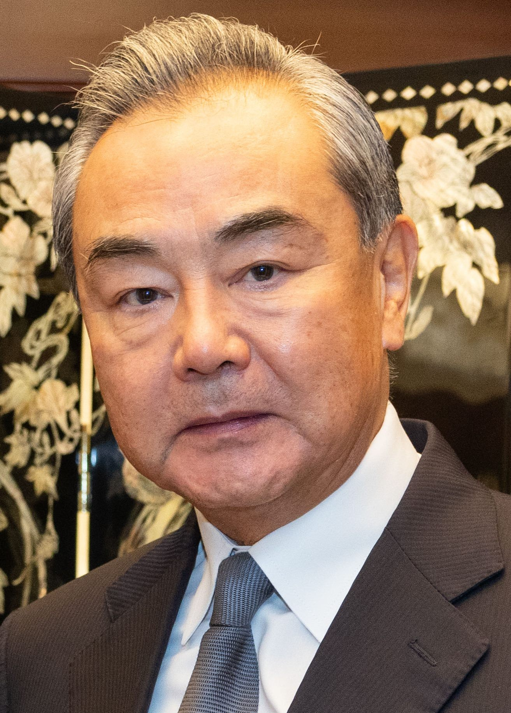

왕이 부장, 이란 외무장관과 회담… 중동 정세 논의
중국 왕이 외교부장이 아바스 아라그치 이란 외무장관과 회담했다. 미국과 이란의 무력 충돌이 이어지는 가운데 열린 접촉으로, 양측은 정세 관리와 양자 협력을 함께 다뤘다.
임숙분 기자 · 2026.09.19
橋중국

중국 외교부는 왕이 부장이 아라그치 이란 외무장관과 회담했다고 밝혔다. 회담에서는 현 중동 정세와 양국 관계 현안이 다뤄졌다.
광고 문의 · 300×250중국은 그간 중동 문제에 대해 대화와 정치적 해결을 강조하는 입장을 반복해 왔다. 이번 회담에서도 관련 기조가 재확인됐다.
이란은 중국의 주요 원유 공급처 가운데 하나이며, 양국은 에너지와 인프라 분야에서 장기 협력 틀을 유지하고 있다.
유가와 항로에 미치는 영향
미·이란 충돌이 이어지면서 국제 유가가 오르고 호르무즈 해협 통항 비용도 상승했다. 이는 아시아 수입국 전반의 조달 비용에 직접 반영된다.
중국은 해상 원유 수입 의존도가 높아 항로 안정에 이해관계가 크다. 외교적 접촉의 빈도가 늘어나는 배경에도 이 점이 작용한다는 분석이 있다.
한국과 대만 역시 같은 항로를 쓴다. 중동발 유가 흐름은 두 지역의 연료비와 물가에 시차를 두고 나타난다.
회담의 구체적 합의 사항은 공개되지 않았다. 양측이 발표한 내용은 정세 인식 공유와 소통 유지에 관한 원론적 표현에 머물렀다.